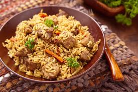

Pilau
Home

Pilau - a fragrant East African rice dish cooked with spices and meat.
Ingredients
- Rice
- Beef or chicken
- Onions
- Garlic
- Pilau masala (spice mix)
- Tomatoes
- Oil
- Salt
Steps
- Fry onions in oil until golden brown.
- Add garlic, pilau masala, and meat, cook until meat is browned.
- Add tomatoes and cook until soft.
- Add rice and stir to coat with spices.
- Add water and salt, bring to a boil, then simmer until rice is cooked and water is absorbed.
- Serve hot, optionally with kachumbari (fresh tomato salad).